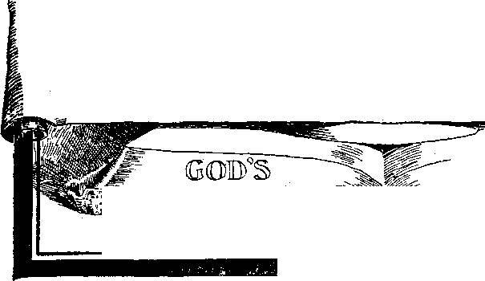

Vol. II
NEW YORK CITY
No. 1
Religious and Scientific Gleanings.
The following item of news is going the rounds of the public press. We confess surprise that so wealthy an organization and one which receives so many large legacies should not furnish a more interesting report: —
“An interesting meeting of the American Tract Society, which was organized in 1825, was held in the Congregational Church in Greenwich, Conn., the home of the president, William Phillips Hall, last week. A review was given of the work of the society, now in better condition than for some years past, although its accomplishments have always been notable. The eighty-fifth annual report, made by the Rev. Dr. Judson Swift, general secretary, has just been issued in neat pamphlet form. The balance sheet for the year shows assets of $2,403,515; liabilities, $1,552,422.47; excess of assets over liabilities, $851,092.53. Three life directors and fourteen life members were constituted during the year covered in the report. The cash appropriations made for the year in Europe, Africa and Asia were $5,300. The totals of these appropriations in the society’s history have been $774,012.43.”
This Society is probably the most active organization ever known in the world along the lines of Tract distribution and home and foreign missionary work. It apparently has no capital, but merely uses as received monies voluntarily donated to its work. While other societies are continually soliciting assistance, both in public and from Church pulpits and through private solicitations, this Society avers that it never solicits money either publicly or privately. Donations to its treasury must come voluntarily or not at all. Its officers receive no salary. Its numerous missionaries receive no salaries—merely their expenses are paid, and these on a very moderate scale. Their printing is done in great quantities and at the lowest prices. Nothing is ever bought on credit. Only in proportion as the Lord supplies the means is the work pushed forward.
This Society’s annual report, briefly summarized, is as follows:
It has about seventy missionaries, home and foreign. They traveled over 500,000 miles last year. They visited more than 3,500 cities. They held more than 11,000 meetings.' This Society expended in the proclamation of the Gospel in foreign countries $20,935.24. It expended in the United States and Canada $139,743.80. It put into circulation more than 600,000 copies of “Studies in the Scriptures,” otherwise called Bible Keys—books for the assistance of Bible Students to a proper understanding of God’s Word. In the United States it circulated tons of free literature in defense of the Bible and to assist people to a proper study and knowledge thereof. This amounted in the English language to more than 350,000,000 of tract pages, and in the foreign languages it circulated in this country more than 6,000,000 of tract pages. These almost inconceivable totals bewilder the average mind. Besides all this is the considerable work which the Society did in India, South Africa, Australia and Europe.
We congratulate the Society on its immense work and the accomplishment of it so economically. One is quite reminded of the feeding of the multitudes with the five barley loaves and two small fishes.
FIFTY - SEVEN METHODIST PREACHERS RESIGN
The September number of the Upper Iowa Methodist Conference this year faced the fact that fifty-seven “charges” in the Conference have been vacated. Newspapers say: “Fifty-seven men, the greater number of them young and in the prime of life, will quit the ministry at this time to engage in secular lines of work. Many of these men are only a few years out of the university and
seminary. The general complaint is • that the salary paid is not sufficient.”
• * ♦
Cardinal Gibbons’ Sermon.
Such a condition of things should not cause astonishment. Nearly all of the ministers that have been graduated from all colleges and seminaries within the last fifteen years left the Alma Mater Higher Critics—unbelievers in the Bible—and many of them skeptical as respects a personal God. This is the general teaching of all the colleges and seminaries, male and female—not openly and a<vowedly sometimes, but really and truly, nevertheless. If there are exceptions, they are rare. '
What incentive is there for the preaching of a message, which the preacher does not believe, from a text which he considers uninspired and believes he could improve upon himself? The motives must be either pride, money, approbativeness or ease. The world is holding out greater inducements to-day along all these lines, for clericalism is growing in disesteem and it is becoming more and more difficult to squeeze money out of unconsecrated pockets.
How much ministers and people both need the true Gospel, which shows the harmony of Divine Justice, Wisdom, Love and Power, and mankind the Divine inspiration of the Bible, showing its complete harmony with itself and with the true principles of godliness!
We clip the following from the daily press. Comment is unnecessary:
“A declaration by the Rev. Dr. 'Charles E. McClellan, pastor of the Fairhill Baptist Church, that ‘Protestantism in the United States is fast decaying ana will soon be a thing of the past,’ aroused a storm of protest at the fifty-third session of the North Philadelphia Baptist Association, in the Fiftieth Baptist Church, at Seventh street and Susquehanna avenue.
“Other ministers were on their feet in an instant, declaring that Doctor McClellan must be mistaken. Instead o,f dying out, they said, Protestantism is now at its zenith, with unbounded opportunities for advancement.
“Doctor McClellan spoke on what he called the decline of Protestantism while making his report as chairman of the missionary committee. ‘The spirit of Protestantism is dying in the United States, and it will soon be a thing of the past,’ he said. ‘Philadelphia, both denominationally and religiously, is going to perdition at a rapid rate.
“ ‘Recently I attended the services in one of our churches, at which I had been invited to speak. I found in attendance nineteen adults and one child. The same condition exists all over the city. We have large, magnificent churches, but small congregations, showing that it is easy to get money, but hard to get men.’ ”
A scientific gentleman in England startles the world with the declaration that he has discovered a certain electric ray that can be focused like light and be used to paralyze armies as easily and as quickly as though lightning had desolated their ranks. This new weapon of destruction, it is said, has been tendered to the British War Department. It is called an “attribute of high-frequency electric current,” which can be separated and, by mechanical contrivance, be deflected and aimed in much the same way as a stream of water from a hose pipe. The “Scientist” says:
“The most striking experiment of all had a horse for its subject. By a mechanical device, which is, of course, a secret invention, it was brought to hear upon the horse at a range of four miles. The results could not have been more rapid or more destructive had the range been four yards. The brute staggered as though dazed by a blow from some unseen hand, then fell stone dead. The same thing would have happened had the range been doubled or trebled, and the fate of a horse might have been the fate of an army corps.”
Surely the increase of knowledge of our day can be safely entrusted only to perfect beings controlled by the Law of Love, or by a higher power.
Recently at Baltimore (Md.) Cathedral Cardinal Gibbons preached a great sermon, a report of which is furnished by the Cardinal himself. It certainly contains a great many good thoughts. All reading it will be interested; also in reading the article which follows it, in which the same subject is examined from a Protestant standpoint by the most prominent minister of our day, whose sermons are estimated to reach more than ten millions of people every week. The Cardinal’s sermon follows:
“The Episcopal Church, in its recent triennial convention, is reported to have advocated in strong and earnest language the reunion of the various Christian Churches. I am grateful to the members of the convention for the praiseworthy sentiments which they express, and which reflect honor on their heads and hearts. And I pray, with them, that the day may be hastened when the words of our common Redeemer, Jesus Christ, may be fulfilled, when there ‘will be one fold and one Shepherd’! However, this consummation can be attained only when all Christians shall recognize one Chief Pastor. For we might as well expect to have a united commonwealth under several independent presidents as to have a united church under the various conflicting spiritual rulers.
“It was manifestly the desire of Christ that all his disciples should be united in the profession of one faith. In his admirable prayer before his passion he says: ‘I pray for them also who through their word shall believe in me, that they all be one, as Thou, Father, in me, and I in thee, that they also may be one in us; that the world may believe that thou hast sent me;’ because the unity of the Church is the most luminous evidence of the divine mission of Christ.
“Unity of government is not less essential to the Church of Christ than unity of doctrine. Our divine Saviour never speaks of his churches, but his Church. He does not say, ‘Upon this rock will I build my churches,’ from which words we must conclude that it never was his intention to establish or to sanction various conflicting denominations, but one corporate body, with all the members united under one visible head; tor as the church is a visible body, it must have a visible head.
Thinks Catholic Church Embraces Everything Essential to Unity of Faith and Government
“Our Saviour calls his Church a sheepfold. ‘And there shall be made one fold and one Shepherd.’ What more beautiful or fitting illustration of unity can we have than that which is suggested by a sheepfold? All the sheep of a flock cling together. If they are momentarily separated, they are impatient till reunited. They follow in the same path. They feed on the same pastures. They obey the same shepherd, and fly from the voice of strangers. So did our Lord intend that all the sheep of his fold should be nourished by the same sacraments and the same bread of life; that they should follow the same rule of faith as their guide to heaven; that they should listen to the voice of one Chief Pastor, and that they should carefully shun false teachers.
“His Church is compared to a human body. ‘As in one body we have many members, but all the members have not the same office; so we, being many, are one body in Christ, and every one members one of the other.’ In one body there are many members, all inseparably connected with the head. The head commands, and the foot instantly moves; the hand is raised and the lips open. Even so our Lord ordained that his Church, composed of many members, should be all united in one supreme visible Head, whom they are bound to obey.
“The Church is composed of a vine, all of whose branches, though spreading far and wide, are necessarily connected with the main stem, and from its sap they are nourished. In like manner, our Saviour will have all the saplings of his vineyard connected with the main stem, all draw their nourish-
ment from the parent stock. In fact, our common sense alone, apart from the revelation, is sufficient to convince us that God could not be the author of various opposing systems of religion. God is essentially one. He is Truth, itself. ‘God is not the God of dissension, but of peace.’ I see perfect harmony in the laws which govern the physical world we inhabit. I see a. marvelous unity in our planetary system. Each planet moves in its own. sphere, and all are controlled by the central sun. Why should there not also be harmony and concord in that spiritual world, the Church of God, the grandest conception of his omnipotence, and the most bounteous manifestation of his goodness and love for mankind!
“Hence, it is clear that Jesus Christ intended that his Church should have one common doctrine, which all Christians are bound to believe, and one uniform government to which all should be loyally attached. Where, then, shall we And this essential unity of faith and government? I answer, confidently, nowhere save in the Catholic Church.
Honey to His Lips and Music to His Ears
“The number of Catholics in the world is computed at two hundred and. fifty millions. They have all one Lord, one faith, one baptism, one creed. They receive the same sacraments, they worship at the same altar, and pay spiritual allegiance to one common, head. Should a Catholic be so unfortunate as contumaciously to deny a single article of faith, or withdraw from the communion of his legitimate pastors, ha ceases to be a member of the church, and is cut off like a withered branch. The church had rather sever her right hand than any member to corrode her vitals. It was thus she excommunicated a powerful king, because he persisted in violating the sacred law of marriage, although she foresaw that the lustful monarch would involve a nation in his spiritual ruin.
“How sublime and consoling is the thought that withersoever a Catholic goes over the broad world, whether he. enters his church in Peking, Melbourne, in London, or Dublin, or Paris, or Rome, or New York, or San Francisco,’ he is sure to hear the self-same doctrine preached, to assist in the same sacrifice, and to partake of the same sacraments.
“This is not all. Her creed is now Identical with what it was in past ages. The same gospel of peace that Jesus-Christ preached on the mount; the same doctrine that St. Peter preached at Antioch and Rome, St. Paul at Ephesus; St. Chrysostom at Constantinople; St. Augustine in Hippo; St. Ambrose in Milan; St. Remigius in. France; St. Boniface in Germany; St-Athanasius in Alexandria; the same doctrine that St. Patrick introduced into Ireland; that St. Augustine brought into England, and St. Pelagius. into Scotland, and which Columbus took -with him into the New World, is ever preached in the Catholic Church throughout the globe, from January till December—‘Jesus Christ, yesterday, today and the same forever.’
“At the recent Eucharistic Congress of Montreal, a great multitude of worshippers was assembled from various: parts of Europe and America. Even. Australia and Africa were represented.. Let us suppose that a pilgrim from Germany or. Switzerland, ignorant of th a language" of the country, is walking the streets, when he hears the sound of the cathedral bell. What hallowed associations it arouses in his memory! He-accepts its voice as an invitation to prayer. He sees the cross-crowned spire, and the cross speaks to his heart-And entering the cathedral, while tears run down h.is sun-burned cheeks, he exclaims: ‘How lovely are thy tabernacles, O Lord of hosts! My soul long-eth, yea, even fainteth for the courts of the Lord. For the sparrow hath, found her nest, and the turtle-dove a home. Thy altars are my home, my King and my Ged!’
(Continued on Sd page, id column.)
PUBLISHED AT
No. 82 BEEKMAN ST., NEW YORK CITY
An Independent, Unsectarian Religious Newspaper, Specially Devoted to the Forwarding of the Laymen’s Home Missionary Movement for the Glory of God and Good of Humanity.
Pastor Russell’s Reply to
Cardinal Gibbons’ Sermon
Cardinal Gibbons’ sermon, widely published, attracted a great deal of attention amongst Protestants as well as Catholics. What will Protestantism say to this? was the query. We have heard but one Protestant response, and that, properly enough, from the pen of the best and most widely known Protestant minister in the world—Pastor Russell, of Brooklyn Tabernacle, New York. We place his reply immediately following Cardinal Gibbons’ presentation, assured that it will be interesting to our Protestant as well as our Catholic readers:
Pastor Russell Congratulates the Cardinal
It falls to my lot to respond to Cardinal Gibbons’ sermon on “A Plea for United Christendom,” in which he urges very forcefully that there is but one Church and that, therefore, all Protestants should abandon their sectarian attitude and join the Roman Catholic Church. The reply falls to my lot, because, although I stand free and independent of all Protestant sects and parties, my brethren of the ministry in various denominations of Protestantism would find it rather awkward and difficult to acknowledge that there is but one true Church, and, in the same breath, to acknowledge that their denomination is no more that one Church than is any other sect.
I am very pleased with Cardinal Gibbons’ kindly moderation in the handling ■of the subject. It contrasts very forcibly with the terrible times of the past, when Roman Catholics on the one hand and various Protestant sects on the other, waged an indirect and internecine strife to the death in the name of God and of our Redeemer and -of righteousness. Surely what all intelligent people need is to abandon foolish prejudices, hypocrisies and superstitions of the past and to come together as true followers of the Lord.
Agrees With Cardinal Gibbons
I am pleased to say that I agree most heartily with Cardinal Gibbons’ presentation in almost every particular. Unquestionably sectarianism is wholly out of accord with the teachings of the Scriptures. Assuredly St. Paul rebuked the Corinthian brethren because they presented a divided front, saying, I am of Paul; I am of Apollos; I am of Peter, etc. St. Paul’s reply to this was that it was proof of carnality, of fleshly minds and proof of an unspiritual state. All Christians are coming to realize this—Catholic and Protestant— although it is but a few years since some claimed that sectarianism was a positive advantage; that it led to a greater zeal and energy in the Divine service than if all were agreed.
All who are conversant with history understand what I mean when I say that God has been pleased to permit an illustration of—first, a united Christendom, and, secondly, a divided Christendom. For long centuries there was practically but the one Church in Europe, the Roman Catholic. The results surely were not all that could have been desired. That unity of the Church brought neither secular nor religious education, nor did it bring to the world the Millennium promised as the great desideratum of humanity. Rather in that long period we see that ignorance and superstition held the reins. During the last few centuries -we have had the opportunity of testing the division of Christendom into various sects and parties. While the results are not satisfactory, while the condition is not what God’s Word prompts us to desire and expect, this divided condition has certainly tended toward greater freedom of thought, greater liberty from ignorance and superstition.
The Perplexing Question
So, then, dissatisfied with the sectarian divisions and strife, and equally dissatisfied with the compulsory union of the past; and, convinced, nevertheless, that the Bible teaches the unity of the Church, we ask, How may this Scriptural unity be attained—the unity ■of the spirit in the bonds of peace and love, which maintains its own liberty and grants the same to others? Where shall we find; how shall we obtain; by what process shall we accomplish this unity?
(Continued from first page.)
“I believe in the one holy catholic and apostolic church. Oh, my brethren, what a charm there is in these words!' They are honey to my lips, music to my ears and sweet jubilation to my heart. They send an indescribable thrill through my inmost soul. I believe in the one holy catholic and apostolic church. This profession of faith is a sacred bond of union between us. It binds us to our brethren in ages past, adown the centuries to apostolic times. It unites us to them in ages yet to come, till time shall be no more.
We agree with the Cardinal, that our Lord speaks of himself in the Scriptures as the one Shepherd of the one flock of this Age and the Supervisor of the one fold. We agree that there iS but the one Church, for whom the Master prayed during his last hours—“that they all may be one in us.” We agree also that the Apostle speaks of the one Church, likening it to a human body, over which there is the one Head, and of which all are members. We agree that there are not many bodies, but one; not many heads, but One. We agree, also, that there is but the one true Vine of the Father’s righthand planting and that this refers to Christ, the parent stock, and to his true members, the branches. We agree, also, that as there is only one Lord, so there is but one faith, and, additionally, that there is but one baptism.
Agreeing with all these Scriptural premises laid down by Cardinal Gibbons, we must, nevertheless, dispute his conclusion, that this one Church which Christ declared he would build upon the rock of Truth and which would grow to a glorious temple composed of living stones, of which St. Peter was one, is the Roman Church, just as we disagree with our Baptist friends when they tell us that the Baptist Church is the one Church. Equally we disagree with our Presbyterian and Methodist, Lutheran and Congregational systems when they each protest that they fill these requirements—that they are the one Church.
Our contention is that everyone who turns his back upon sin; who accepts of Jesus as his Redeemer and Savior, and who approaches the Father in full consecration through Jesus and who receives the begetting of the Holy Spirit of God—all such are the brethren of Jesus and sons of God, whether or not they join the Roman Catholic, the Congregational, the Methodist, Presbyterian or other human systems. Our contention is that none of these human systems, Catholic or Protestant, is recognized by the Bible—none of them is recognized of God. They are all human, institutions—originated by men and maintained by men—sometimes good men and sometimes bad men have had to do with their organization and its maintenance. Indeed, we hold that such a reformed, consecrated believer is equally a child of God in whatever jienomination he may be, or if he be outside of all denominational walls or creeds.
Which Is the True Church?
According to the Bible we may all find the answer we are seeking—an explanation of what and where is the true Church. In the Scriptures it is described as “the Church of the Firstborns, whose names are written in heaven’’ (Heb. 12:23). Will our Protestant friends claim that their Church roll corresponds to that written in heaven in the Lamb’s Book of Life? Would Christian friends of any denomination dare to make such a claim ? Most assuredly, No. We all realize that at very most the various sects and parties of Christendom are composed of wheat and tares and that, so far as human judgment can discern, the tares are vastly in the majority.
Christian Union Never Lost
From this standpoint we perceive that the great masses, Catholic and Protestant, are not, and never were, the Church of Christ—they deceived themselves. They have been children of this world, not spirit-begotten New Creatures in Christ; they have not been living stones in the temple, not branches of the true Vine, not members of the “little flock.” They have been worldly people with religious sentiments and good desires who misunderstood that great teaching of the Bible—that only the sanctified are in Christ Jesus, called to be saints. What has been done by these large numbers of well-meaning but mistaken people , in the way of organizing churches, lodges, banks, etc., has had nothing whatever to do with the great organization which God effected eighteen cepturies ago and which has persisted as a unit in the world ever since.
The true Church has never been divided, because each member of it is
united with the Lord, the Head, and, through him, united to every other “member of his Body, which is the Church,” the “little flock.” In this one Church there has always been maintained one Lord Jesus, one faith, his Word of promise, one baptism—the baptism of consecration into his death —to suffer with him that, by and by, we may reign with him. ■
The Hidden Mystery
Does someone say, Where is the history of this Church? We answer, in the language of the Apostles, that “the world knoweth us not, even as it knew him not.” The world of Jesus’ day were the professed religionists; yet they knew not the great religious Teacher and Redeemer, whom God had sent, and they crucified him. Similarly all the way down, the great religious teachers of the various systems have not known, have not recognized the
“members *of the Body of Christ” a bit more than the Jews recognized the Head of that Body.
This is the very point which St. Paul emphasizes. He declares that the fact, as well as the philosophy, of the Church being members of Christ is to the world—both the religious and the irreligious world—a Hidden Mystery. It is outside of their philosophy, their theory, their understanding. Hence it is that the most saintly characters, both in Catholicism and Protestantism, have been martyrs, as Jesus was, as St. Stephen was, as all the Apostles were, and all the faithful during the intermediate centuries, and as some may yet be if an outward union be effected such as once prevailed—in the “dark ages.”
Counterfeiting the True Church
If we now declare that, to a certain extent, the true Church has been counterfeited, both by Catholics and Protestants, let no one take offense and suppose that we are wishing to speak unkindly. We do not charge that these counterfeits of the true Church were made knowingly or intentionally, but merely that the Church, coming under the control of brilliant minds not spirit-begotten, not heaven-enlightened, misread the Word of God, misinterpreted it and followed their misinterpretations.
Notice, for instance, the Roman Catholic Church. The average Roman Catholic does not know that he is not a member of the Church. But Cardinal Gibbons will not deny it, nor will any of the ecclesiastics. Their teaching, most explicitly, is that the Church is composed of the Pope and the other religious instructors and that the Common people are not members of the Church, but, as they style them, “children of the Church.”
Thus the Catholic Church appropriates to itself the words of Jesus respecting the “little flock,” etc.; they apply these Scriptures to the clergy and not to the congregation. This is the secret of Papacy’s great mistake. In their ecclesiastical system they have a counterfeit of the true Church, and because the Scriptures declare that the Lord’s faithful “little flock,” “the Church of the living God whose names are written in heaven,” will reign with Christ, therefore Papacy claims, on the strength of that promise, the right to reign with imperial power and heavenly authority over the kingdoms of earth. And it has been Papacy’s endeavor to carry out this erroneous reasoning and to make good its counterfeit of the true Church and her work, that has led to so many grievous difficulties, persecutions, wars.
The True Reign of the Saints
If Papacy has the counterfeit of the true Church and the counterfeit of the true reign, what does the Bible teach respecting the genuine? This: That the experiences of the unknown, dis-esteemed, rejected of men, saintly followers in Jesus’ footsteps constitute their schooling, testing, preparation for a share in the Kingdom with Christ their Lord. When the full number of the elect Church, predestinated of the Father, shall have been thus gathered out of the world and finally glorified—> then the Kingdom to which they are heirs will be established and they shall be joint-heirs with Jesus Christ their Lord, King of kings and Lord of lords. His Kingdom will rule the world, not by guns or swords, not by racks or burning at the stake and inquisitorial torments, but by heavenly power which then will have full control of earth's affairs.
Children of the Church
What our Catholic friends have is still merely a foreshadowing—or, shall I use the harsher word counterfeit—of the Truth respecting the Church as a mother and certain children. The Scriptures teach that in the new order of things, when Christ shall take to himself his great power and institute his Millennial Kingdom for the blessing and uplifting of mankind, he will have a Bride—the Church—“The Bride, the Lamb’s Wife” (Rev. 21:9). And the Scriptures further represent that the glorified Jesus, who is the heavenly Bridegroom, and the glorified Church, who is the heavenly Bride, will, figuratively. beget children. That is to say, all through the thousand years of the reign of righteousness the glorified Jesus will be the everlasting Father, ur Giver of everlasting life, on the earthly plane to Adam and all of his children who will accept it on the terms of the Kingdom. Then the Church will be the mother or nourisher and caretaker of all mankind to uplift them, instruct them, develop them, in the ways of righteousness—to bring as many as will prove willing up to the full perfection of human nature and life everlasting. All refusing this uplift and rejecting the grace of God will be destroyed in the Second Death. St. Peter tells us that their destruction will be similar to that of the brute beast that perisheth (2 Pet. 2:12).
Are There Protestant Counterfeits?
Although Protestants repudiate the Roman Catholic idea that the clergy alone constitute the Church and that the people are the children of the
Church, nevertheless in many denominations we see this insidious error in a slightly different form. This is notably true of the Episcopal Church, which puts everything in the way of government into the hands of the clergy and treats the laity, to a considerable de-. gree, as though they were children unable to comprehend spiritual things. The Methodist Episcopal Church follows closely in the same line of procedure. The Presbyterian and Lutheran systems also quite particularly differentiate the clergy from the laity, even though the laity be given some apparent recognition on the ecclesiastical boards. This is done usually for a reward or for the purpose of securing financial or legal advice. But the laity is not supposed to have an equal standing with the clergy in respect to spiritual things.
Congregationalists and Baptists and Disciples most nearly recognize an equality between the clergy and laity and that the entire Church of God, whoever they may be, are a Royal Priesthood. Yet even with these congregational bodies there is an attempt made to separate between clergy and laity and to hold all the spiritual power and authority in the hands of the clergy. This is done along financial lines in the Congregational Church through the so-called Congregational Union. In the Baptist Church the ministers combine in what is known as a Baptist Ministers Association, which holds the reins over the people as parents over children and tells them whem they may ■call for a Pastor and whom not—whom they are willing to ordain as their Pastor and whom they will refuse. Thus the same spirit is manifested in all these earthly systems and by it they are all distinctly differentiated from the true Church and her Scriptural regulations, which declare, All ye are brethren—and One is your Master, even Christ, and One is your Pope, or Father, even God.
Royal Priesthood Composed of Priests Regardless of Denomination
So, then, we ask Cardinal Gibbons to consider with us the Scriptural teaching which we have presented, namely, that the Royal Priesthood is composed exclusively of saints, regardless of whether they belong to their clergy or laity or are to be found elsewhere. “The Lord knoweth them that are his.” We ask the Cardinal to consider that this one Church is indivisible; that the Heavenly Father is the husbandman of this true Vine; that he does not suffer any to remain as branches, members, of the true Church unless they bring forth the true fruit of the Vine. We ask the Cardinal to consider the Scriptural teaching that this saintly class, already vitally united with Jesus, is now the espoused virgin class mentioned by St. Paul (2 Cor. 11:3), and that they are waiting for the completion of their number, when the Heavenly Bridegroom, at his Second Coming, will receive them to himself in glory. By the power of the First Resurrection they will be changed in a moment, in the twinkling of an eye, and be with their Lord; and like him. Then, as the Scriptures declare, will come the marriage of the Lamb, “for his Wife hath made herself ready.” And shortly after that will come the Millennial Kingdom and the times of regeneration mentioned by our Lord, when his faithful will sit with him in the Throne and the regeneration of Adam’s race, the giving to them of new-life from the Life-Giver, will begin.
As for the great and prosperous human institutions which are more or less duplicating the Lord’s Kingdom all over the world, these also, in the Scriptures, are called vines—'the vine of the earth, in contrast with the Vine of the Heavenly Father’s right-hand planting. It is not for us to determine how much good and how much harm these earthly churches, vines of the earth, have accomplished. That the Lord will declare in his own season, but he tells us that the grapes borne by these vines— anger, malice, hatred, envy, strife, evilspeaking, etc.—will overflow the winepress of the wrath of God in the near future and bring upon the vrorld that great time of trouble, which all may see upon the horizon and w'hich the Lord declares will be such a time of trouble as the world has never before known.—Daniel 12:1; Matt. 24:21.
The Most Remarkable Religious Meeting of the Past Year
The New York American’s Report of It.
4,000 in Hippodrome Applaud When Venerable Brooklyn Clergyman Advocates Establishment of a Jewish Nation.
Hearers Who Came to Question Gentile’s Views on Their Religion Find He Agrees in Their Most Important Beliefs.
Preacher, After Hailing Them as One of the Bravest Races on Earth, Says Kingdom May Return to Them by 1915.
The unusual spectacle of 4,000 Hebrews enthusiastically applauding a -Gentile preacher, after having listened to a sermon he addressed to tnem concerning their own religion, was presented at the Hippodrome yesterday afternoon, where Pastor Russell, the famous head of the Brooklyn Tabernacle, conducted a most unusual service.
In his time the venerable pastor has done many unconventional things. His religion is bounded by no particular denomination, and encompasses, as he says, all mankind. His ways of teaching it are his own. But he never did & more unconventional thing than —nor a more successful one.
Received at First in Silence
this
big and out
ready for him.
He was received at • 11 ; - 1 —.............. ~ ■■ ~ '......... -
In the crowd which filled the showhouse were scores of rabbis teachers who had come to speak in case the Christian attacked their religion or sought to win them from It. They had questions and criticisms ifirst in a dead silence.
But the Pastor did not speak to convert the Jews. To their unbounded delight, he pointed out the good things of their religion, agreed with them in their most important beliefs as to their salvation, and finally, after a warm advocacy of the plan of the Jews establishing a nation of their own, brought about a tumult of applause by leading a choir in the Zionist anthem: “Hatikva —Our Hope.”
A more interesting audience the Hippodrome never held, perhaps. From all parts of the city came serious-minded Hebrews to hear what it was an alien, a -Gentile, might have to say to them at a .service held during their week of feast-Ihg. Hosh-Hoshana. They were quiet, well-dressed, thinking men and women.
Among them were many prominent figures of the Hebrew literary world. Some of these escorted Pastor Russell to the Hippodrome in a motor car and then took places in the auditorium. The literary men recognized the Pastor as a writer and investigator of international fame on the subject of Judaism and Zionism. Some of those present were Dr. Jacobs, editor of the American Hebrew; W. J. Solomon, of the Hebrew Standard; J. Brosky, associate editor of the same; Louis Lipsky, editor of the Maccabean; A. B. Landau, of the Warheit; Leo Wolfsohn, president of the Federation of Roumanian .Societies; J. Pfeffer, of the Jewish Weekly; S. Diamont, editor of the Jewish Spirit; S. Goldberg, editor of the American Hebrew; J. Barondess, of the .Jewish Big Stick, and Goldman, editor of H’Yom, the only Jewish daily.
No Religious Symbols There
No symbol of any religion at all greeted them when they gazed at the Hippodrome stage. It was entirely •empty save for a small lectern and three peace flags hanging from silken -cords above. One was the familiar white silk banner with the Stars and ^Stripes in its centre, together with the words “Peace Among Nations” in letters of gold. Another bore a rainbow, and the word “Pax.” The third was a jsilken strip bearing miniature representations of all the nations’ flags.
With a powerful, yet charming voice, that filled the great playhouse, the unconventional clergyman made his every word audible to every hearer. His tones pleased their ears, his graceful gestures soon captivated their eyes, and in a few moments his apparently thorough knowledge of his subject appealed to their minds. Though still silent, the 4,000 were “warming up” to him.
Reserve and Doubt Vanish
It was not long before all reserve, and all possible doubt of Pastor Russell’s entire sincerity and friendliness were worn away. Then the mention of the name of a great Jewish leader— who, the speaker declared, had been raised by God for the cause—brought a burst of applause.
From that moment on the audience was his. The Jews became as enthusiastic over him as though he had been a great rabbi or ftimous orator of their own religion. He hailed them as one of the bravest races of the earth—having kept their faith through the persecutions and cruelties of all other people for thousands of years. And he predicted that before very long they would be the greatest of the earth—not mere
PASTOR RUSSELL OF BROOKLYN TABERNACLE, ALPRESS/NG AN ENTBUSLASF/CAULMENCE, AT THE JEW/SH A/ASS MEET/NG, LN THE NEW YORK H/PPQRROME.
ly a people any longer, but a nation. By a system of deductions based upon the prophecies of old, the Pastor declared that the return of the kingdom of the Jews might occur at so near a period as the year 1915. Persecution would be over and peace and universal happiness would triumph.
As he brought his address to a conclusion, the Pastor raised his hand again to his choir. This time they raised the quaint, foreign-sounding strains of the Zion hymn, “Our Hope,” one of the masterpieces of the eccentric East Side Poet Imber.
The unprecedented incident of Christian voices singing the Jewish anthem came as a tremendous surprise. • For a moment the Hebrew auditors could scarcely believe their ears. Then, making sure it was their own hymn, they first cheered and clapped with such ardor that the music was drowned out, and then, with the second verse, joined in by hundreds.
At the height of the enthusiasm over the dramatic surprise he prepared, Pastor Russell walked off the stage and the meeting ended with the end of the hymn. He was congratulated by scores of men and women who had come in indifferent, if not hostile, frames of mind, and he made a friend, they all declared, of everyone who had heard him.
What Pastor Russell Said
Pastor Russell, in opening his sermon, read many quotations from the prophecies of the Bible relating to Zionism, the first one of which was Psalm 102:13-18: “Thou shalt arise and have mercy upon Zion; for the time to favor her, yea, the set time, is come.” David, Solomon and others represented Jehovah in the kingdom of Israel and “sat upon the throne of the kingdom of the Lord.” Later the kingdom was taken from Zedekiah, the last of the line of David to sit upon the throne of God’s typical kingdom. When the dominion was taken from him the Gentile governments were recognized, but not in the same manner as was Israel.
So long as God acknowledged the nation of Israel as his Kingdom their kings were his representatives; but when Zedekiah was rejected it was not inconsistent on the Lord’s part to recognize the Gentile governments as above suggested. Of King Zedekiah we read: “O thou profane and wicked Prince, whose time has come that iniquity should have an end. Remove the diadem. Take off the crown. This shall not be the same. I will overturn,, overturn, overturn it until he come whose right it is (Messiah), and I will give it unto him” (Ezekiel 21:26, 27). It was at this very time that God gave the lease of earthly power to Nebuchadnezzar and his successors, as is related in Daniel’s prophecy. Nebuchadnezzar dreamed, but disremembered his vision. Daniel the Prophet, made prisoner at an earlier date, was, by Divine providence, introduced to the king as the one person in all the world able to rehearse the King’s dream and to give its interpretation, and his power so to do is declared to have been of the Lord.
When Messiah Shall Stand Up
The vision was of a stupendous image. Its head of gold represented Nebuchadnezzar’s Empire—Babylon. Its breast and arms of silver represented the Medo-Persian Empire. Its belly
and thighs of brass represented the Grecian Empire. Its strong legs of iron represented the Roman Empire, East and West. Its feet of iron and clay represented Papal Rome. The iron continues to represent civil governments, and the miry clay, making them appear like stone, represents ecclesiasticism as it is now mixed up with the politics of the ten kingdoms of Europe. The whole period of time in which these various Gentile governments would dominate the world would last until Messiah’s promised Kingdom. And this period is symbolically stated to have been “seven times”; that is, seven years—evidently not literal years, but symbolical. ■ • ‘
At their end the lease of earthly power of Gentile governments will terminate in the great time of trouble foretold by Daniel (12:1). Then Messiah shall stand up in the sense of assuming control of earth’s affairs and Gentile governments will cease, for all nations shall serve and obey Messiah. And then God’s Chosen People, Israel, will come to the front in the world’s affairs, because they will become the representatives and instruments amongst men of Messiah’s Kingdom, which will be spiritual and invisible, as is that of the Prince of this world, the Prince of Darkness, whom Messiah will bind or restrain during the thousand years of his reign of righteousness and destroy at the conclusion, when he shall deliver over the kingdom of earth to the Father. Mankind will then be perfect, because all willful sinners will be destroyed in the Second Death. Meantime, Messiah’s reign will bless and uplift not only Israel, but through Israel the blessing will extend to every nation, people, kindred and tongue in full accord with the Divine promise and oath made to Abraham more than thirty centuries ago.
The speaker would not pretend to say the day or month or year in which these things would be accomplished— in which the Gentile lease of earth’s dominion would expire and Messiah's Kingdom assume control.
He did, however, offer a suggestion: So far as he could discern, the time for these stupendous events is very much closer than many of us had supposed. The seven times, or years, of Gentile domination, reckoned on the basis suggested in the Scriptures themselves, should be interpreted a day for a year, lunar time. Seven years in lunar time would represent 2,520 days, and these, symbolically interpreted, would mean 2,520 years—from the time Nebuchadnezzar, the head of the image, was recognized, down to the time of the expiration of the lease of Gentile power, when the stone shall smite the image in the feet. So far as Pastor Russell has been able to determine, the year of Zedekiah's dethronement was 606 B. C. Thus calculated the 2,520 years of Gentile lease of power will expire in October, 1914.
Indications That Gentile Times Are Expiring
“About twenty years ago,” said the speaker, “Providence raised up for your people a great leader, Dr. Herzl, whose name is now a household word with your race. Dr. Herzl’s endeavor was to have all loyal sons of Israel rise from the dust and aspire to be a nation amongst nations and to provide a
home for the persecuted of their race in Russia and Eastern Europe. Dr. Herzl struck the popular chord in the hearts of the people. At first it was purely political, and the name of Zion meant little of anything religious; but gradually Dr. Herzl and all the leaders of the counsels of your people began to see that the religious element of the movement was the strongest, the most powerful.
“Dr. Herzl has be'en succeeded by Dr. Nordau, also evidently a man of great talent and great patriotism; but Zionism languishes, but it will not fail, as many fear. According to my understanding of the Hebrew prophets, the time' of “Jacob’s trouble” is not yet ended. Further pogroms of Russia may be expected and further atrocities in Roumania and elsewhere. It is sad indeed to be obliged to admit that these tribulations will probably come to you from professed Christians. How ashamed I feel of those who thus dishonor the name and the teachings of my Master, I cannot find words to express!
“They are deluded. They have misunderstood the Teacher whom they profess to follow. Their thought is that God will torment eternally all who do not profess the name of Christ. Controlled by delusion they are serving the great Adversary and dishonoring Jesus. But as the trials and difficulties of the patriarch Joseph were God’s providences to lead him on to influence and power and honor, so will all these experiences and persecutions work blessings for your race and tend to drive them out of their present satisfaction and make them long for home—for Palestine.
“It is my thought that some of your most earnest and saintly people will go to Palestine quickly, that the rejuvenation there will be astonishing to the world. Further, it is my thought that Jews in every part of the world, in proportion as they come under the holy influences of God’s promises through the prophets, will go to Palestine sympathetically—by encouraging those who can better go than themselves and by financial assistance and the establishment there of great enterprises.
“Permit me to suggest that in the time of trouble, incidental to the transfer of Gentile rule to the power of Messiah, all financial interests will be jeopardized. Many of your *race, growing wealthy, will surely take pleasure in forwarding the work of Zionism, as soon as they shall realize that it is God, foretold through the prophets.
“And those of your people of insufficient faith to use their means in forwarding the Lord’s work at this important juncture will, before very long, find themselves in the condition pictured by the Prophet Ezekiel, who declares (7:19) that in this great day of trouble ‘They shall cast their silver in the streets and their gold shall be removed; their silver and their jgold shall not be able to deliver them in the day of the wrath of the Lord.’ The great Messenger of the Covenant whom ye delight in (Malachi 3:1-3) will test and prove you as a people. Those who worship idols of gold and silver, stocks and bonds Will receive severe' ehhstise-mefit at His'hand that they may learn a gr$at lesson before he will grant them5 a share of the coming blessings.”
WHY DO
WELL THE LOST
and
IS
crisis
!? HELL
rHOUGXTJ
are nor
THc
of SATANS
REASON
LET .REASON HAVE THE ONLY SURE FOUNDATION ~THE BIBLE
Mftolii LET VS®?
INTERNATIONAL BIBLE STUDENTS ASSOCIATION FREE LECTURES ON MOST INTERESTING AND HELPFUL TOPICS
SreAson tog&b«ER|i
THROW
INDUSTRIAL
SOCIAL
Hall A. 18 W. Superior St., Duluth, Minn.
